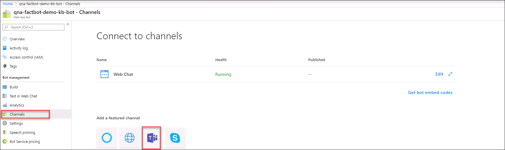
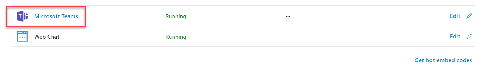
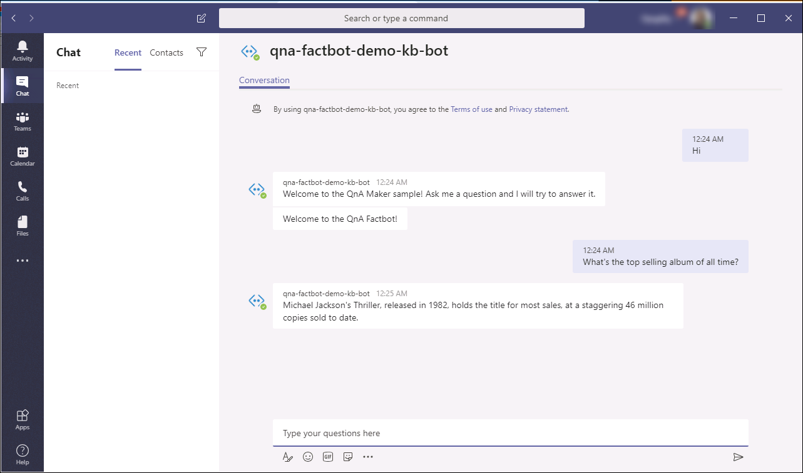

Once deployed, bots can be connected to channels such as Slack, Microsoft Teams, and Facebook Messenger, where you can interact with them the way you would with a person. In this exercise, you will add the bot to your Teams chat and carry on a conversation with it in Teams.
You can open the Teams web app with the following url. Use your own email to start a free trial or sign into an existing account.
http://teams.microsoft.com/Return to your Web App Bot in the Azure Portal and click Channels under Bot management on the left. Click the Teams icon. Then click Save at the bottom of the blade. Agree to the terms of service if prompted.

Navigate somewhere else on the blade then return to Channels. Click Microsoft Teams and select the option to use the web app to add the bot to Teams and launch the Teams web app again.

Start a conversation with the bot by entering hi into the Teams window. Then converse with the bot by asking it questions and seeing how it responds. Refer to the Factbot.tsv file located in C:\SkillMeUp for examples of questions to ask.

You now have a fully functional bot created with the Azure Bot Service, infused with intelligence by Microsoft QnA Maker, and available for anyone in the world to interact with. Feel free to plug your bot into other channels and test it in different scenarios. And if you would like to make the bot smarter, consider expanding the knowledge base with additional questions and answers. For example, you could use the online FAQ for the Bot Framework to train the bot to answer questions about the framework itself.